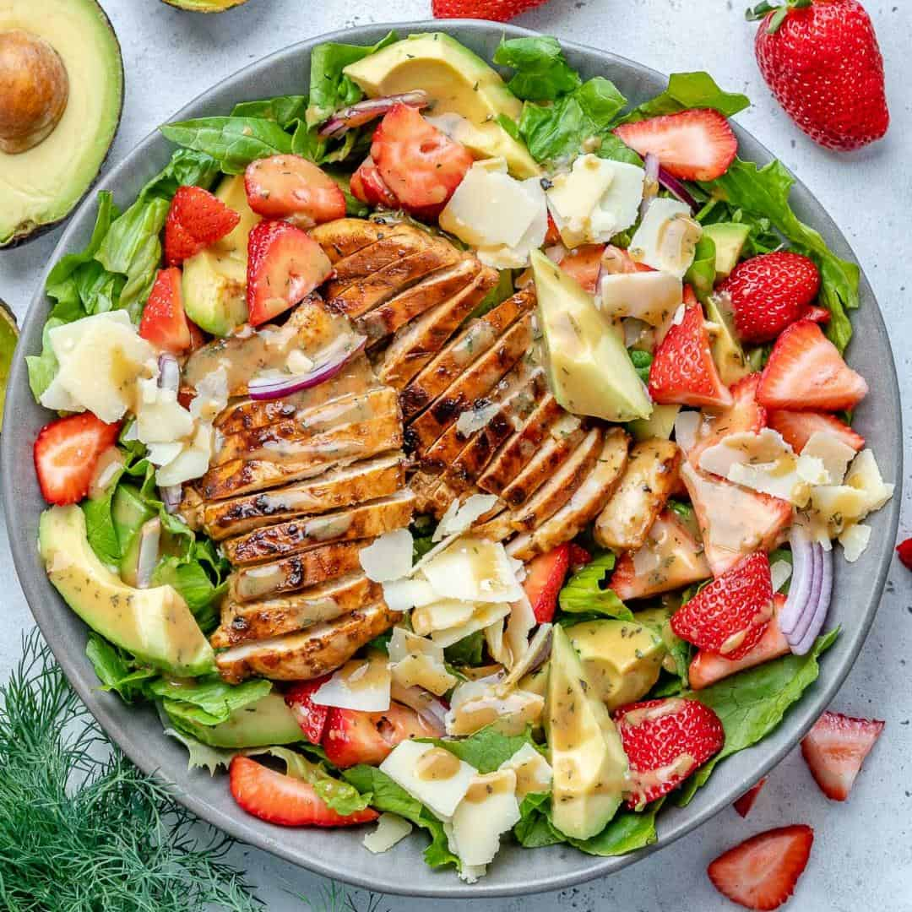

Description
Source = Allrecipes
Ingredient
- 1/2 cup mayonnaise
- 2 teaspoons lemon juice
- 1 teaspoon honey
- 2 teaspoons poppy seeds
- 2 cups chopped, cooked chicken
- ¾ cup sliced fresh strawberries
- ¼ cup pecan pieces
- 1 stalk chopped celery
- 2 stalks green onions, chopped
- 2 tablespoons chopped fresh parsley
- salt and ground black pepper to taste
Steps
- Mix mayonnaise, lemon juice, honey,
and poppy seeds together in a medium bowl.
Add chicken, strawberries, pecans, celery,
green onions, parsley; toss to combine.
Season with salt and pepper.
Home